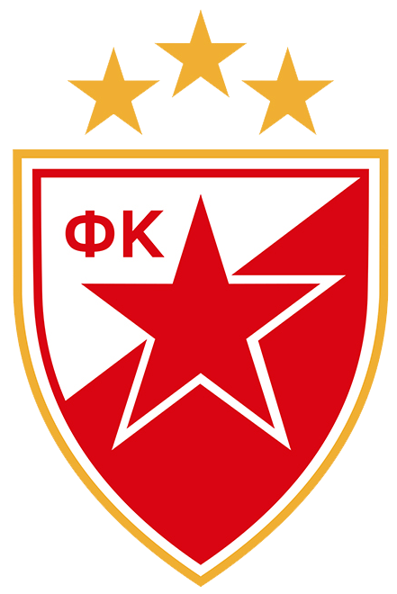
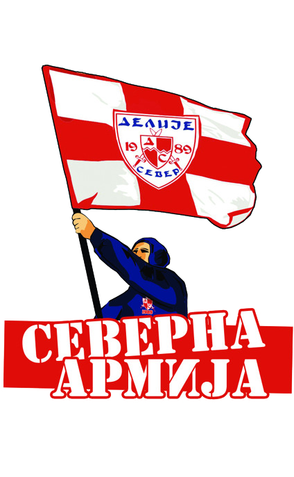

O Zvezdi
FK Crvena zvezda je najtrofejniji fudbalski klub u Srbiji osvojivši ukupno 62 titule, uključujući 31 domaći šampionat, 24 nacionalna kupa, dva nacionalna superkupa, jedan liga kup, dva Mitropa kupa, jedan Kup šampiona i jedan Interkontinentalni kup. Najveći uspeh postignut je 1991. godine kada osvaja Kup evropskih šampiona u Bariju i Interkontinentalni kup u Tokiju iste godine.
Igra na svom stadionu koji od 2014. nosi ime po legendi Crvene zvezde Rajku Mitiću, sa kapacitetom od 51.755 sedećih mesta. Stadion je među domaćom publikom poznat kao Marakana po nazivu istoimenog stadiona u Brazilu, iako mu to nikad nije bio zvaničan naziv. Prema većini istraživanja Crvena zvezda je najpopularniji klub u Srbiji i Beogradu.
Navijači
Crvena zvezda je srpski klub sa najvećim brojem navijača prema većini istraživanja koja su sprovedena u Srbiji. Navijači Crvene zvezde se nazivaju Delije. Ova navijačka grupa nastala je ujedinjenjem dotadašnjih manjih navijačkih grupa 7. januara 1989. Delije su uvek imale svoje grupe i podgrupe, trenutno neke od najznačajnijih su: Belgrade boys, Brigate, Ultra Boys i Heroes.
Navijači Crvene zvezde i Olimpijakosa razvili su duboko prijateljstvo. Navijači oba tima su sebe nazvali „Pravoslavna braća“ („Orthodox Brothers“). Mnogo puta navijači Crvene zvezde iz različitih navijačkih klubova su bili na utakmicama Olimpijakosa, posebno protiv njihovog najvećeg rivala Panatinaikosa. Odnedavno „Orthodox Brothers“ su počeli da uključuju navijače Spartaka iz Moskve.
Kontakt
Tim

Dizajn: Danilo Gurešić